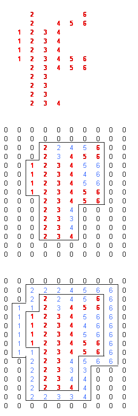

Pressures, temperatures or material data can be assigned by pointsets, that overwrite the constant values or gradients. The user can choose between (i) Extrapolated points for the entire formation or (ii) to specify that the pointset is applicable over the pointset area only. In the latter case it will take a background value (constant or set gradient) outside the area of the pointset. When it is specified to use the pointset over the pointset area only, Geomec tries to determine the 2D or 3D area of the pointset. This is carried out by enclosing the pointset within a box or a "convex hull". In this manner Geomec can place an element node inside or outside the hull, hence applying the pointset data or not.
In applying the data, Geomec always respects Formation boundaries. All the pointsets that get attributed to a Formation hence only apply for that specific formation.
Within the hull a nearest neighbour method is chosen, just like under the Extrapolated method. Each element (or node) looks for the nearest neighbouring point in the pointset. More than one pointset can be attributed to the Formation, to reflect for instance depletion in two areas of the same formation which do not have to overlap. When the pointsets do overlap, Geomec will average the values that would have been assigned by the pointsets.
Outside the hull, values are taken from the constant value (for pressure and temperature: a gradient in depth) that is supplied under the pressure or temperature leaf or the material model.
For 2D pointsets the bounding area is only in the horizontal direction. All elements within a Formation will only look for nearest neighbouring points in lateral directions (i.e. the smallest distance after vertical projection).
The user can extend to area (or volume) of the convex hull area in the Data Storage section. Under pointset/elementset attributes, the user can select a distance to extend the area outward (Enlarge (move out) pointset boundary (hull) by .. meters). This distance applies for all data under the same pointset.
Another option is to
use extrapolated values outside set of
distributed values.
Note 1: When choosing "Same as Previous" under pressure attributes, all the settings from the previous Depletion Stage are copied including assigned pointsets. There is no need to copy the pointsets to a new Depletion Stage, if nothing changes with the previous stage.
Note 2: Badly spaced or very large pointsets may give rise to problems in determining the hull, particularly with 3D pointsets.
Note 3: 3D pointsets may give rise to strange looking pressure fluctuations near the formation boundaries, since some nodes may be positioned just outside the hull. Avoid 3D pointsets for thin layers. Consider deleting the Depth axis from the pointset.
Note 4: For material properties, the default is to extrapolate properties. The user can change the setting by choosing “configure distributed properties”, to be accessed by right-clicking on the assigned material model.
In the example below a pointset with value 1-6 is provided, displayed on top. When choosing to limit the pointset validity to the area of the pointset, with a zero-value outside the pointset area, Geomec will draw a convex hull (black line) around the data, hence including all gaps in the data, that will be assigned near neighbour values. The original data are red, where the extrapolated data are blue. The background data (the zeros) are black. When extending the convex hull area, the bottom picture might be created, where an extra layer of nodes get assigned pointset values, which are the blue value in between the two black lines. In the example it is assumed that column spacing is just lower than the row spacing.
